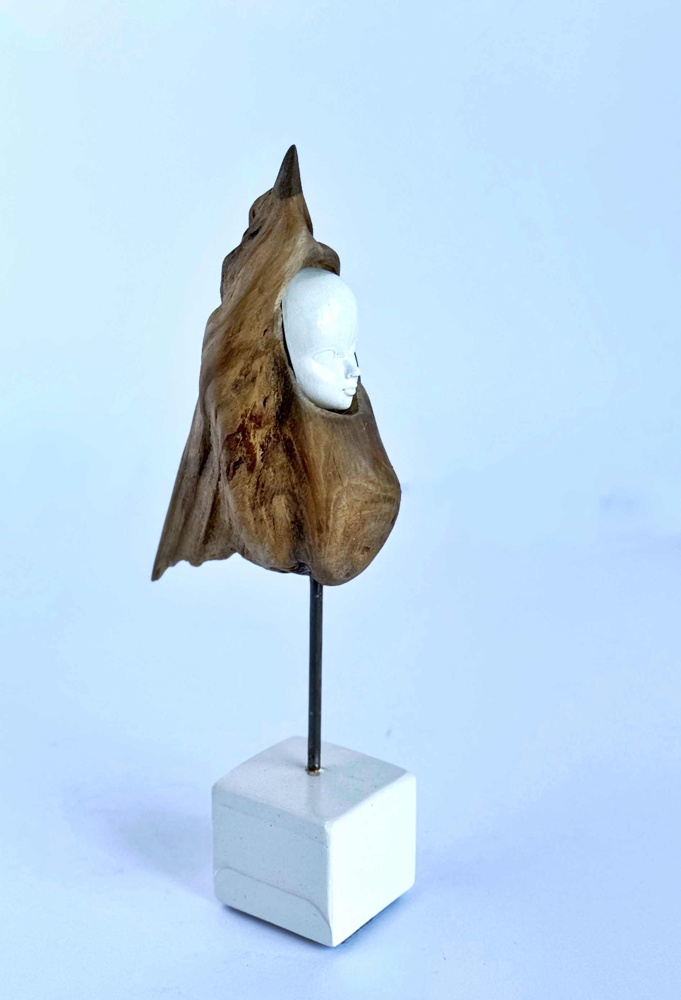
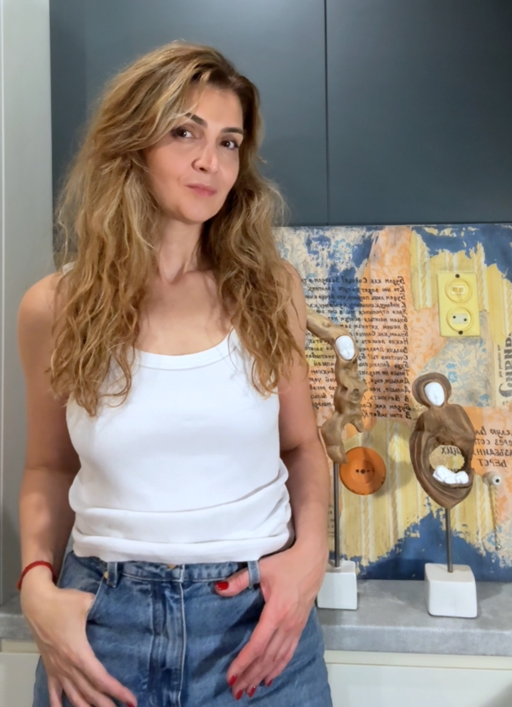
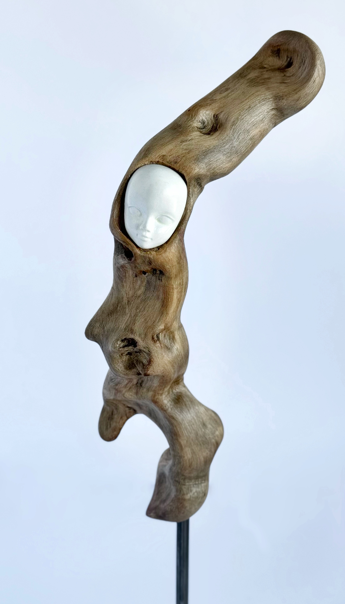
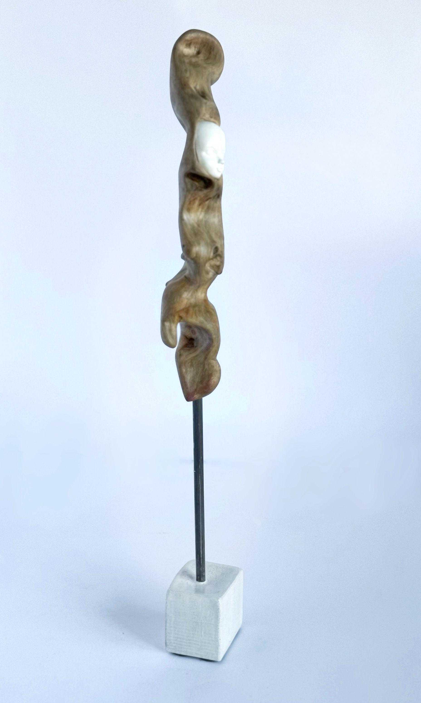
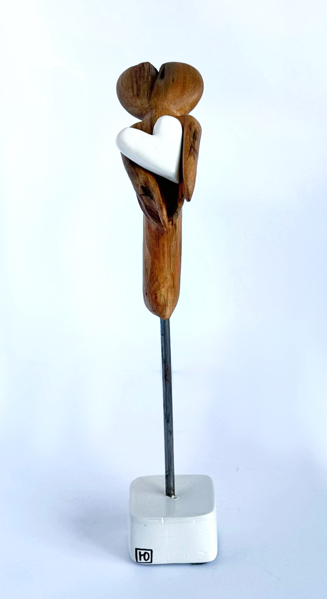

Принятие
Найденное дерево · 33 × 15 см
23 500 ₽Юлия Дружинина · художник
У каждой вещи есть своя история.
Я создаю скульптуры из найденного дерева
и ассамбляжи из фрагментов прошлого.
Исследую память, несовершенство
и то, что помогает нам оставаться собой.

С 2012 года моя жизнь тесно связана с творчеством. За это время я работала с текстильной куклой, живописью, фотографией, деревом, создавала рамы и предметы интерьера из старых материалов.
Сегодня я создаю скульптуры из найденного дерева и ассамбляжи из фрагментов старых интерьеров. Меня интересует момент, когда материал, который, кажется, уже завершил свою историю, неожиданно обретает новую.
Подробнее обо мне →
Мне близка мысль,
что не всё нужно
исправлять, чтобы
сделать прекрасным.
Иногда важно
сохранить следы
времени, принять
неровности и позволить
вещи быть собой.

Найденное дерево · 33 × 15 см
23 500 ₽
Найденное дерево · 23 × 6 см
8 000 ₽
Найденное дерево · 45 × 13 см
23 500 ₽
Найденное дерево · 36 × 10 см
23 500 ₽